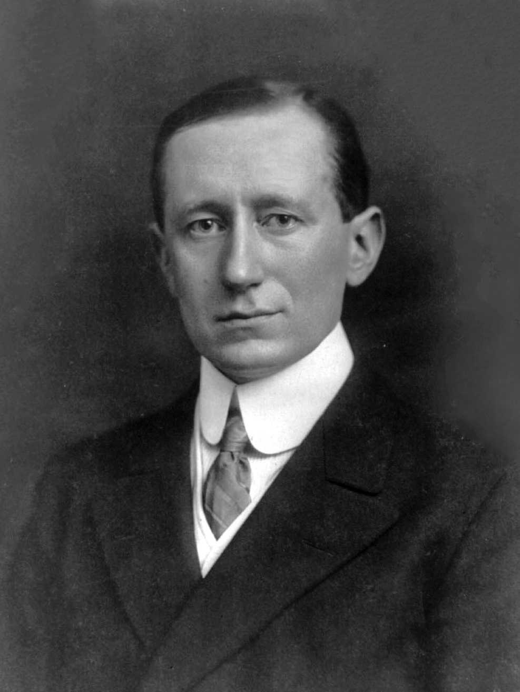

Invención de la radio


Musica de radio antigua
Inventores
Uno de los temas mas polemicos en el campo de la invención, es quien fue el primer creador de la radio, esto a causa de la falta de la velocidad en la transmisión de la información, las leyes de patentes en los distintos paises y la definición de los elementos requeridos para considerar que se puede definir como radio. Es por ello que se abarcan los inventores y descubridores mas importantes para la creación de este aparato, reconociendo los logros y aportes de cada uno de los individuos, el cual puede ser ampliado al hacer click en sus nombres.
Heinrich Rudolf Hertz [5]Nacio en Hamburgo en 1857 y fallecio en Bonn en 1894. Fue un físico alemán que descubrió el efecto fotoeléctrico, la propagación de las ondas electromagnéticas y las formas para producirlas y detectarlas, esto último indispensable para la creación de la radio. La unidad de medida de la frecuencia, el hercio o Hertza Hz, lleva ese nombre en su honor.
 Nikola Tesla [6]
Nikola Tesla [6] Nacio en Smiljan en 1856 y fallecio en Nueva York en 1943. Fue un inventor, ingeniero eléctrico y mecánico serbio con nacionalidad estadounidense, recordado por sus contribuciones al diseño del moderno suministro de electricidad de corriente alterna AC, facilitando la transmisión de la electricidad con respecto a la corriente directa DC usada hasta entonces.
Julio Cervera [7]Nacio en Segorbe en 1854 y fallecio en Madrid en 1927. Fue un ingeniero y comandante que cursó estudios de Ciencias Físicas en la Universidad de Valencia. Fue cadete de caballería en Valladolid. Escribio sobre la geografia y el ecosistema propio de marruecos. Trabajo con Marconi y diseño el tranvia de Tenerife.
 Guillermo Marconi [8]Nacio en Bolonia en 1874 y fallecio en Roma en 1937. Fue un ingeniero electrónico italiano, conocido como uno de los más destacados impulsores de la radiotransmisión a larga distancia, por el establecimiento de la Ley de Marconi, así como por el desarrollo de un sistema de telegrafía sin hilos (TSH) o radiotelegrafía. Señalado como el principal inventor de la radio, en 1909 obtuvo un nobel conjunto por sus aportes a la telegrafía inalámbrica.
Reginald Fessenden [9]Nacio en Quebec en 1866 y fallecio en las Islas Bermudas en 1932. Fue un inventor canadiense, muy reconocido por sus trabajos en las primeras épocas de la radio, incluyendo el uso de ondas continuas y la que es, posiblemente, la primera radiotransmisión de voz y música. A lo largo de su carrera, recibió cientos de patentes por dispositivos en campos como la transmisión de alta potencia, sonar y televisión.